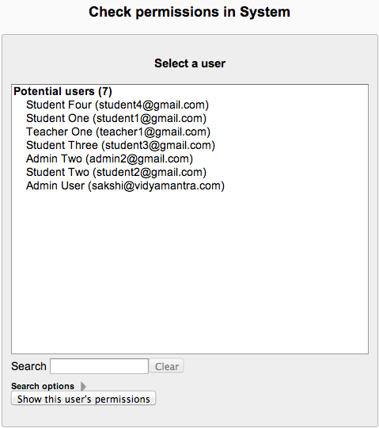

You are here Administration > Site administration > Users > Permissions > Check system permissions .
The check permissions feature provides a method to view the capabilities for a selected user based on their role assignments. These capabilities determine whether or not the selected user is allowed to perform associated tasks within the system or course.

- Enter the user’s name into the ‘Search’ field and press Enter.
- Select the correct user from the list.
- Click ‘Show this user’s permissions’.
- A list of all permissions for the selected user is displayed.
Note: Use the filter to search the permissions list.